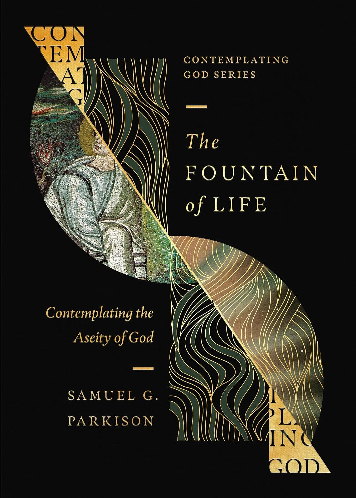

The Fountain of Life
Crossway · Theology · 96 pages
Published January 13, 2026 · ISBN 9798874900823 · $12.99
From the publisher
As part of the Contemplating God series, author Samuel G. Parkison offers an accessible and engaging exploration of divine aseity—God's complete independence as the eternal plentitude of life—inviting readers to marvel at the wonders of the living God.
Description adapted from the publisher, Crossway.
What reviewers are saying
"God made you to delight in thinking about him. Grasp that divine purpose, and by grace, you'll treasure profound little volumes like this exploration of aseity—the breathtaking reality that God exists entirely from himself, an infinite wellspring of love, life, and holiness."
— Tony Reinke, author, 12 Ways Your Phone Is Changing You
Endorsements published by the publisher; more on the publisher's page.
Pulpit & Page note: we'll add our own take once we've read it. For now, this page gathers the publisher's description and what named reviewers have said.
← Back to the calendar Get the weekly email
Disclosure: Pulpit & Page may earn a commission from purchases made through our links, at no extra cost to you.